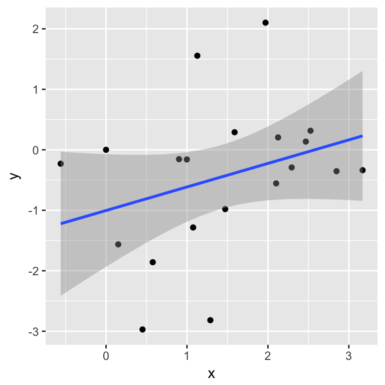

The TFUHP package is designed for college students studying transportation engineering and for transportation professionals and researchers interested in understanding the complex relationships associated with freeway performance and traffic breakdown. Newtons Laws of dynamics, fundamentals of trafic flow theory (TFT), probabilistic modeling and statistics are used in this package. By building upon current knowledge - the “classical methods” of transportation analysis - and integrating them with the latest computer tools, the goal is to identify key factors that initiate a breakdown event. Emphasize is placed on:
Traffic noise or traffic volatility.
Driver behavior and safety.
Development of stochastic models that explain breakdown and highway performance.
The principal aim of this work is to explain highway performance as simply as possible. Topics are introduced in a step-by-step manner. Exploratory data analyses of a freeway bottleneck, inspection of a YouTube video of vehicles traveling around a ring road, and the core assumptions of TFT and statistics are used.
A principal product of this effort is the development of a probabilistic traffic flow model:
where speed is treated as a random variable \(U = g(u, \sigma)\) where speed \(u\), the standard deviation of speed \(\sigma\), traffic density \(k\), and safe headway \(h\) are constant values. The overall volatility of the process is specified by \(\sigma\), which is assumed to be a measure of driver group dynamics and other uncertainties. The safe distance headway \(h\) reflects the drivers’ aversion to risk. Additionally, \(h\) is assumed to be a deterministic function of the constant speed \(u\) and vehicle length. Since all drivers are assumed to maintain a safe headway, no crashes are permitted. Thus, the model of \(Q\) is an important measure of highway performance and a parsimonius, stochastic model.
Since \(n\) is fixed and speed varies over time and is treated as a random variable \(U\), the fundamental relationship is written as \(Q = nU/l\) where the road length is \(l = 2\pi r\) with \(r\) equal to the radius of the loop road. Returning to the question of the better model, \(\pi = P(Q = q)\) or \(\pi = P(K = k)\), the answer is \(\pi = P(U = u)\). The root causes of traffic breakdown in this experiment are: (1) the inability of the drivers to maintain a constant speed, and (2) the drivers need to accelerate and decelerate to maintain a safe distance between themselves and the vehicles in front of them or safe headways. The optimum driving condition is defined to be time it takes an indivual driver to complete a loop at speed \(u\). The delay is estimated as the extra time for a driver to complete a loop. To explain this scenario, the stationary time-series model of \(U\) is introduced and the calibration of this model is discussed.
A quick read of the Overview may give the impression that the approach, a package of computer algorithms, will be difficult to understand and overwhelming to implement. Words, like complex, dynamics, theory, parsimonious, stochastic and model integration can be daunting. No question that designing and operating a transportation system are difficult problems. By disecting the problem into manageable pieces and synthesizing the results from the individual pieces brings clarity to the process.
Consider a “toy” example using _sequential-demand-forecasting. It is a 4-step approach. Questions associated with (1) trip generation, (2) trip distribution, (3) modal-split, and trip assignment are asked. Our task is to improve an existing campus transporation system. This is no small task, especially when budgetary constraints are imposed. Suppose we obtained the following responses:
Trip generation, “What is the purpose of your trip?” Work, shopping, entertainment, doctor’s visit, etc. and of course, returning home after completing these activites. Since our problem, deals traveling on campus, we interview 10 students in this “toy” example. To further simplify the problem, we assume that all students are together in the same classroom. The answers range to my next class in a different building, study hall, dining hall, etc. The answers, you can see, can be anticipated. You can see that answers are dependent on the time of day and may include other factors.
Trip distribution, “Where do you want to go?” Thus, for the students, we need to know the locations of class rooms, study halls, dining halls, etc.
Modal-split, “What means of transporation will you use?” Walk, bicycle, auto, bus. For the general public, answers include taxi, Uber, train, boat and airplane.
Trip assignment, “What route will you use?” Answers include sidewalks, local streets, boulevards, freeways, waterways, and the airways.
To build a system for a campus with hundreds or thousands of students, more people will be interviewed. Of course, not all students, faculty, staff and administrators on the campus need to be interviewed. While a sample of 10 students is insufficient, a representative sample will suffice. A most important point, even for this “toy” example, is the need for quality data. Once obtained, statistical analysis can be used to extract critical information from the data and to build predictive models.
The trfhp package is a collection of R functions and libraries. This wide variety of statistical and graphical techniques are made available through the open-source cran network. The aim is to use these tools to better understand freeway performance and traffic breakdown. Computer simulation, enhanced graphics including animation, and sensitivity analysis are used in the trfhp package. For example, ggplot2 from Rstudio is used to produce the animation presented below. Shiny is used to build interactive web applications for conducting sensitivity analyses.
Let’s look again at trip generation. This time, we will incorporate visual imagry into the discussion. Before the interview, we don’t know if the students will travel north, south, east or west or how far they will travel. We do know that they are all located at the same place initially and when the class ends that they will disperse. A R Brownian motion model, a time-dependent stochastic model, can simulate this behavior. At time \(t\) = 0, the students are located at the point \((x = 0, y = 0)\). They become more dispersed as time progresses. Robert Brown, a botanist, described this chaotic motion of a grain of pollen suspended in water. This model is used by economists and physicists [@sde] [@iacus].
knitr::include_graphics("tripdispersion-1.png")
Trip Dispersion
Trip Dispersion
The mathematics behind the animation is relatively simple. Of course, the Brownian motion model shown here can be adapted to other situtations. This will be illustrated presently. The ultimate aim of using trfhp package tools is to improve our chances of mitigating congestion and improving performance using the simple mathematical and graphical tools.